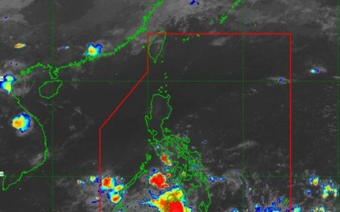
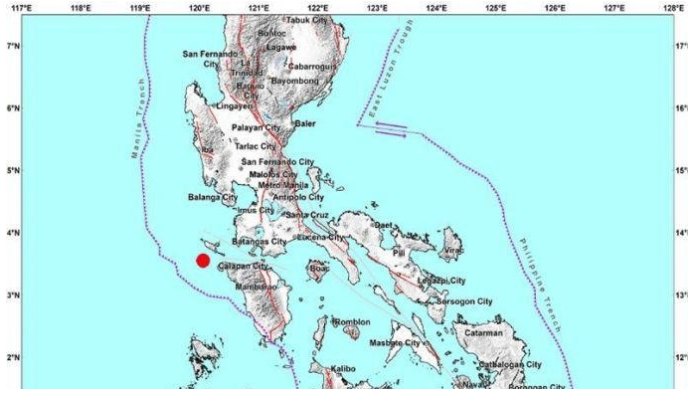
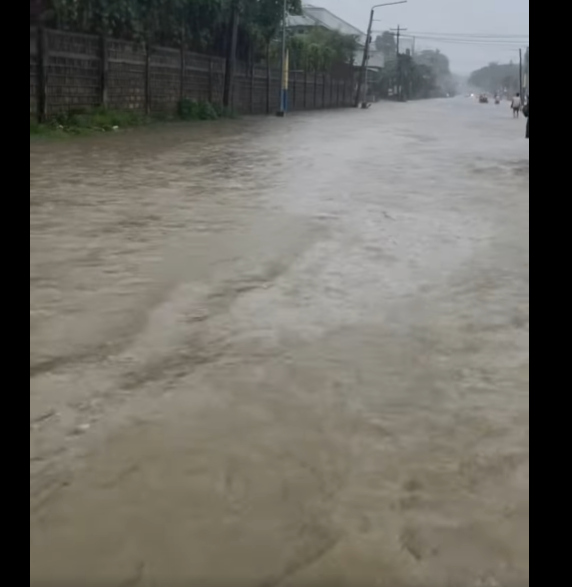
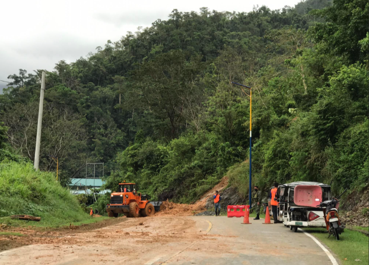

NEWS AND WEATHER FORECAST

MANILA, Philippines — The low pressure area (LPA) located in northern Sulu Sea will continue to bring rain over several parts of the country on Thursday, the Philippine Atmospheric, Geophysical, and Astronomical Services Administration (Pagasa) said.

MANILA, Philippines — A magnitude 4.2 earthquake shook Occidental Mindoro before dawn yesterday, according to the Philippine Institute of Volcanology and Seismology.
Phivolcs said the quake occurred at 12:15 a.m. Its epicenter was located 27 kilometers south of Looc town.
A devastating fire swept through a residential-commercial area in Barangay Namayan, Mandaluyong City, on Monday morning, resulting in the tragic death of a three-year-old boy and injuries to six others.

MALAWAKANG BAHA SA BARANGAY BANCAO-BANCAO
MALAWAK na ang baha sa bahagi ng Bgy. Bancao-Bancao partikular sa old airport ng Puerto Princesa City.

PUERTO PRINCESA CITY — A landslide early Friday blocked part of the national highway in Barangay Langogan, north of this city, due to incessant heavy rains, authorities said.